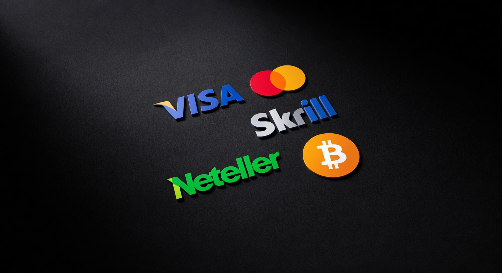
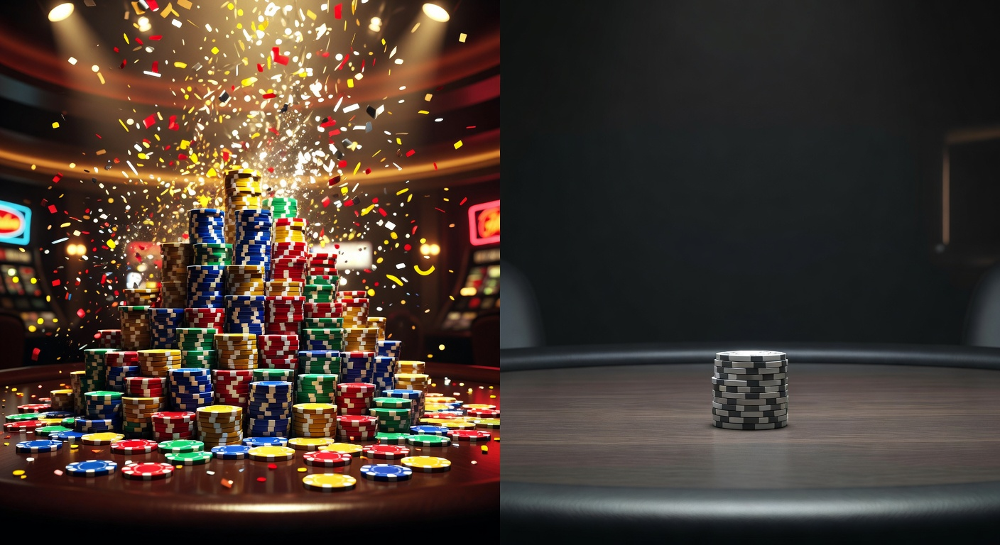
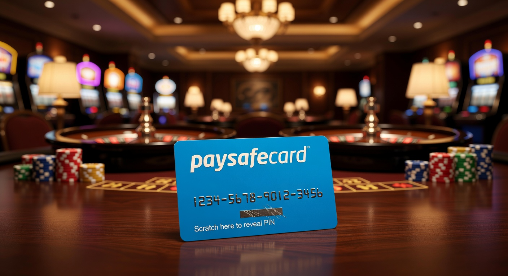

Beste online casino buitenland: Hoe vind je de veiligste aanbieders?
De wereld van iGaming is in 2026 drastisch veranderd. Terwijl de lokale markt verzadigd is met strikte regelgeving, zoeken steeds meer Nederlandse spelers naar het beste online casino buitenland om een breder scala aan mogelijkheden te ontdekken. Buitenlandse platforms bieden vaak innovaties die we op de lokale markt nog niet zien, van geavanceerde crypto-integraties tot persoonlijke AI-gedreven loyaliteitsprogramma's. Het vinden van een betrouwbare partij vereist echter een scherp oog voor kwaliteit en veiligheid.
Wanneer we spreken over het beste online casino buitenland, doelen we op platforms die beschikken over internationale licenties en een bewezen staat van dienst. In dit artikel duiken we diep in de wereld van internationaal gokken, de voordelen van spelen over de grens en waar je als speler specifiek op moet letten om je ervaring zowel leuk als veilig te houden. De focus ligt hierbij op transparantie, snelle uitbetalingen en het omzeilen van onnodige bureaucratie.
Waarom gokken bij een buitenlandse aanbieder?
Veel spelers vragen zich af waarom de overstap naar een internationaal platform zo populair is geworden in 2026. De voornaamste reden is de vrijheid die een buitenlands casino biedt. In tegenstelling tot lokale aanbieders, die gebonden zijn aan de zeer strikte limieten van de nationale toezichthouder, kunnen internationale sites meer flexibiliteit bieden in hun bedrijfsvoering en spelerservaring.
Ruimer spelaanbod en hogere bonussen
In een internationaal georiënteerd casino vind je vaak duizenden gokkasten van ontwikkelaars die in Nederland soms lastiger te vinden zijn. Denk aan exclusieve titels van opkomende studio's of innovatieve live casino varianten. Bovendien is de welkomstbonus bij het beste online casino buitenland vaak vele malen lucratiever, met gunstigere rondspeelvoorwaarden dan wat we lokaal gewend zijn.
Geen restricties van de KSA
De Kansspelautoriteit (Ksa) heeft de afgelopen jaren de regels voor de Nederlandse markt flink aangescherpt. Voor sommige spelers voelt dit als een beperking van hun spelplezier. Bij een buitenlandse aanbieder heb je vaak geen last van de verplichte speelpauzes of de uiterst lage stortingslimieten die de Ksa oplegt, wat voor high-rollers een belangrijke factor is bij hun keuze.
Belangrijke criteria voor het beste online casino buitenland
Niet elke site die zich profileert als de beste is dat ook daadwerkelijk. Om het beste online casino buitenland te identificeren, hanteren we strikte benchmarks. Veiligheid staat hierbij altijd voorop. Een platform moet niet alleen een uitgebreid aanbod hebben, maar ook over een robuuste infrastructuur beschikken om spelersgegevens en tegoeden te beschermen tegen externe dreigingen.
| Criterium | Wat maakt het de beste? | Belang voor de speler |
|---|---|---|
| Licentie | MGA of Curaçao Gaming Control Board | Garandeert eerlijk spel en toezicht |
| Betaalsnelheid | Binnen 24 uur verwerkt | Snel beschikken over je winst |
| Klantenservice | 24/7 Live Chat | Directe hulp bij vragen of problemen |
| Spelersbescherming | Zelfuitsluiting tools | Verantwoord gokken blijft mogelijk |
Betrouwbare licenties (MGA en Curaçao)
Een cruciaal onderdeel van een betrouwbaar buitenlandse casino is de licentie. De Malta Gaming Authority (MGA) staat al jaren bekend als de gouden standaard binnen Europa. Ook de licenties uit Curaçao zijn in 2026 sterk verbeterd qua toezicht en regelgeving, waardoor ze een veilig alternatief bieden voor spelers die op zoek zijn naar meer variatie en minder beperkingen.
Populaire betaalmethoden buiten de grens

Betalen bij het beste online casino buitenland is tegenwoordig eenvoudiger dan ooit. Waar men vroeger enkel afhankelijk was van creditcards, zien we nu een breed scala aan opties. Moderne platforms maken gebruik van instant-payment technologieën waardoor stortingen en opnames nagenoeg onmiddellijk worden verwerkt, wat essentieel is voor een soepele speelervaring.
Gokken met Crypto en Trustly
Cryptocurrencies zoals Bitcoin en Ethereum zijn in 2026 niet meer weg te denken uit de gokwereld. Ze bieden privacy en snelheid die traditionele banken niet kunnen evenaren. Daarnaast blijft Trustly een favoriet voor wie houdt van bankoverschrijvingen zonder gedoe. Het fungeert als een brug tussen je bank en het casino, waardoor je veilig kunt storten zonder een account aan te maken.
Voor wie liever anoniem blijft met kleine bedragen, is een paysafecard casino zonder cruks een uitstekende optie. Deze methode stelt je in staat om met prepaidtegoeden te spelen, wat perfect is voor budgetbeheer en privacy.
Bonussen bij een buitenlands casino vergeleken

De bonusstructuur is vaak de reden dat een speler kiest voor het beste online casino buitenland. Je vindt er niet alleen standaard stortingsbonussen, maar ook uitgebreide cashback-regelingen en VIP-programma's die daadwerkelijk waarde toevoegen. In 2026 zien we dat veel buitenlandse goksites overstappen op bonussen zonder ingewikkelde kleine lettertjes, wat de transparantie ten goede komt.
- Reload bonussen: Wekelijkse extra's op je stortingen.
- Free spins: Vaak weggegeven bij de lancering van nieuwe slots.
- Cashback: Een percentage van je verlies terugkrijgen, vaak zonder inzetvereisten.
- No-deposit bonussen: Gratis speeltegoed om het casino te testen.
Casino zonder registratie
Een van de grootste trends in 2026 is het casino zonder registratie. Dit concept, vaak aangedreven door Pay N Play technologie van Trustly, stelt spelers in staat om direct te beginnen met spelen. Je identiteit wordt geverifieerd via je bankrekening, waardoor het invullen van lange formulieren en het uploaden van paspoortkopieën tot het verleden behoort. Dit maakt de drempel bij een online casino zonder registratie aanzienlijk lager.
Paysafecard casino zonder CRUKS

Veel ervaren gokkers geven de voorkeur aan een paysafecard casino zonder CRUKS omdat dit hen de mogelijkheid geeft om te spelen buiten het nationale zelfuitsluitingsregister om. Hoewel verantwoord spelen essentieel is, vinden veel consumenten de automatische koppeling van alle Nederlandse aanbieders aan dit systeem te ver gaan. In het buitenland behoud je zelf de controle over je speelgedrag zonder dat elke actie centraal wordt geregistreerd.
Waarom kiezen spelers voor een no account casino?
De term "no account casino" is synoniem geworden voor snelheid en efficiëntie. Spelers in 2026 hebben weinig geduld voor administratieve rompslomp. Een casino online buitenland dat deze optie aanbiedt, trekt vaak een publiek aan dat waarde hecht aan privacy. Je deelt geen gevoelige persoonlijke informatie met de aanbieder, wat in een tijd van toenemende datalekken een groot voordeel is.
Bovendien zorgt de koppeling met je bank ervoor dat uitbetalingen bij een casino online zonder registratie binnen enkele minuten op je rekening staan. Dit is een enorm verschil met traditionele casino's waar je soms dagen moet wachten op de goedkeuring van de financiële afdeling.
iDEAL en iDIN
Hoewel iDEAL de meest gebruikte methode is in Nederland, is het bij een buitenlands online casino niet altijd beschikbaar. Echter, veel internationale partijen hebben in 2026 alternatieven geïmplementeerd die exact hetzelfde werken. iDIN wordt soms gebruikt voor snelle leeftijdsverificatie, maar spelers die liever geen sporen achterlaten op hun bankafschriften wijken vaak uit naar een paypal casino zonder cruks voor een extra laag tussen hun bank en het platform.
Licentie en regulering
Een buitenlands online casino opererend onder een licentie uit Malta of Estland moet voldoen aan strenge Europese richtlijnen. Dit betekent dat de software regelmatig wordt gecontroleerd door onafhankelijke instanties zoals eCOGRA of iTech Labs. Volgens informatie op Wikipedia over online gokken is de regulering wereldwijd de laatste jaren flink aangescherpt om fraude tegen te gaan en eerlijkheid te garanderen.
Hoe wordt CRUKS gecontroleerd?
Het Centraal Register Uitsluiting Kansspelen (CRUKS) is een Nederlands systeem. Buitenlandse aanbieders hebben geen toegang tot deze database en zijn dus niet verplicht om dit te controleren. Dit betekent dat je bij het beste online casino buitenland kunt spelen, zelfs als je in Nederland een pauze hebt ingesteld. Dit legt een grotere verantwoordelijkheid bij de speler zelf om de eigen limieten te bewaken en alleen te spelen met geld dat men kan missen.
Zelf een betrouwbare buitenlandse aanbieder herkennen
Het herkennen van een kwalitatief buitenlandse online casino vereist onderzoek. Kijk altijd onderaan de website voor het licentienummer en controleer dit bij de desbetreffende autoriteit. Lees daarnaast recente reviews van andere spelers op onafhankelijke forums. Een goed casino met een internationale focus zal ook altijd duidelijke algemene voorwaarden hebben die niet verstopt zijn achter vage links.
Let ook op de softwareproviders waarmee het casino samenwerkt. Grote namen zoals Evolution Gaming, NetEnt en Pragmatic Play werken alleen samen met gecertificeerde partners. Als je deze namen tegenkomt bij een casino met een buitenlandse licentie, is dat vaak een goed teken van betrouwbaarheid en financiële stabiliteit.
Veiligheid en verantwoord spelen bij buitenlandse goksites
Hoewel buitenlandse goksites niet onder het toezicht van de Ksa vallen, betekent dit niet dat ze geen aandacht besteden aan verantwoord spelen. Het beste online casino buitenland in 2026 biedt uitgebreide tools aan. Je kunt hierbij denken aan sessielimieten, verlieslimieten en de mogelijkheid tot tijdelijke zelfuitsluiting. Deze tools zijn essentieel om gokken een leuke hobby te houden.
Bovendien maken veel internationale sites gebruik van geavanceerde encryptie (SSL) om je transacties te beveiligen. Dit zorgt ervoor dat je geld en data veilig zijn voor kwaadwillenden. Het is altijd verstandig om te controleren of een site beschikt over een geldig certificaat voordat je een storting doet.
Conclusie: Is het beste online casino buitenland iets voor jou?
De keuze voor het beste online casino buitenland hangt af van je persoonlijke voorkeuren als speler. Zoek je naar maximale vrijheid, enorme bonussen en een gigantisch spelaanbod zonder de beperkingen van de Nederlandse wetgeving? Dan is een internationaal platform de juiste keuze. In 2026 zijn de standaarden voor internationale casino's hoger dan ooit, waardoor veiligheid en entertainment hand in hand gaan.
Zorg er wel altijd voor dat je je eigen grenzen kent. Of je nu kiest voor een online casino buitenland vanwege de crypto-opties of de snelheid van een casino zonder account, verantwoord spelen blijft de basis van elke positieve gokervaring. Met de juiste voorbereiding en kennis kun je veilig genieten van alles wat de internationale markt te bieden heeft.
Veelgestelde vragen
Wat is het beste online casino buitenland in 2026?
Het beste casino varieert per speler, maar in 2026 blinken platforms met een MGA-licentie en directe uitbetalingen via Trustly of Crypto vaak uit in de tests.
Is gokken in het buitenland legaal voor Nederlanders?
Als speler bega je geen strafbaar feit door bij een buitenlandse aanbieder te spelen, maar deze aanbieders mogen zich niet specifiek richten op de Nederlandse markt zonder lokale licentie.
Hoe snel krijg ik mijn geld bij een buitenlandse goksite?
Bij moderne casinos zonder registratie staan uitbetalingen vaak binnen 15 minuten op je rekening. Bij traditionele methoden kan dit 1 tot 3 werkdagen duren.
Kan ik iDEAL gebruiken bij buitenlandse casino's?
Sommige buitenlandse online casino aanbieders bieden iDEAL aan via tussenpersonen, maar vaker zul je alternatieven zoals Trustly, Volt of Klarna tegenkomen die identiek werken.

Expert in online casino's en digitaal gokken met meer dan 8 jaar ervaring in de sector.